이 장에서 할 수 있는 일자동 편성이 맡는 일과 운영자가 맡는 일을 가르고, 무엇을 설정해야 결과에 반영되는지 압니다.
자동 편성은 안을 냅니다. 운영자는 설정하고, 안을 비교해 고르고, 시즌 일정으로 확정합니다.
자동 편성은 반드시 지킬 규칙을 모두 지키는 일정을 몇 분 안에 만듭니다. 그러나 규칙을 지키는 일정은 하나가 아니고, 어느 것이 「가장 좋은」 일정인지도 하나로 정해지지 않습니다. 운영 방침 설명하기 창은 이렇게 적고 있습니다.
「그런 균형점은 하나가 아니라 여럿이고, 그 가운데 어디에 설지는 자동 편성이 정하지 못합니다.」
그래서 어디에 설지는 운영자가 정합니다. 무엇을 먼저 챙길지 정하고, 그 방침대로 나온 결과를 보고, 그 가운데 하나를 고릅니다.
그림 1 「운영자」와 「자동 편성」이 각자 하는 일의 흐름 · 설명 그림(화면 아님)
1.1 자동 편성이 하는 일
반드시 지킬 규칙을 하나도 어기지 않는 일정을 만들고, 그 가운데 운영 방침에 맞는 더 나은 일정을 찾습니다.
반드시 지킬 규칙은 일정이라면 꼭 갖춰야 하는 조건입니다. 연전 기간마다 모든 구단이 한 번씩 나오고, 한 구장에서 같은 기간에 두 경기를 하지 않고, 홈 또는 원정은 3연속까지이고, 운영자가 홈 구단을 정한 날에는 그 구단이 홈 경기를 하는 것 같은 규칙입니다. 어느 운영 방침을 고르든 이 규칙은 지키고, 어긴 결과는 저장하지 않습니다. 전체 목록은 전체판 11장에 있습니다.
규칙을 지키는 일정은 셀 수 없이 많습니다. 자동 편성은 그 가운데 운영자가 정한 우선순위와 허용 수준으로 견주어 더 나은 쪽을 찾아가고, 끝나면 결과를 저절로 저장해 실행 결과 비교에 쌓습니다.
1.2 운영자가 정하는 일
운영자는 세 가지를 정합니다. 조건이 맞는지, 무엇을 먼저 챙길지, 어느 결과를 시즌 일정으로 쓸지입니다.
조건 — 편성 조건은 미리 채워져 있습니다. KBO 발표 전이라 예상으로 넣은 값에는 「추정」 표시가 붙어 있으니, 맞으면 ✓ 수락, 다르면 수정을 누릅니다. 3장.
방침 — 어느 격차를 먼저 줄일지(우선순위)와 목표마다 어디까지 봐줄지(허용 수준)를 정합니다. 4장.
확정 — 방침을 바꿔 가며 실행해 쌓인 결과를 실행 결과 비교에서 견주어 하나를 확정합니다. 해마다 하나이고, 확정 취소로 되돌립니다. 6장.
자동 편성이 견주는 목표는 넷입니다. 앞의 셋은 구단 사이의 격차(가장 많은 구단 − 가장 적은 구단)이고, 마지막 하나는 리그 전체의 합입니다.
목표
무엇을 세나
이동 횟수 격차 줄이기
다른 구장으로 옮겨 간 횟수. 멀고 가까움은 보지 않음
이동 거리 격차 줄이기
옮겨 간 거리를 더한 km. 횟수가 같아도 먼 곳을 오가면 커짐
주말·공휴일 홈 격차 줄이기
홈 연전 날짜마다 매긴 점수의 합. 기본은 토·일 1점, 공휴일 2점, 어린이날 3점
전체 이동 거리 줄이기
10구단이 옮겨 간 거리를 모두 더한 값. 격차가 아니라 합. 언제나 마지막 순위
이동의 격차와 주말·공휴일 홈의 격차는 함께 최소로 만들 수 없습니다. 한쪽을 맞추면 다른 쪽이 벌어지므로, 어느 쪽을 먼저 챙길지를 운영자가 정합니다. 허용 수준을 넘어도 결과는 나옵니다. 자동 편성은 넘은 만큼을 줄이려 노력하고, 끝까지 못 넣으면 「넘음」인 채로 냅니다.
1.3 운영자가 설정하는 것
자동 편성은 운영자가 설정한 것만 압니다. 중계 일정이나 구단 행사 같은 화면 밖의 사정은 설정으로 바꿔 알려 줘야 결과에 들어갑니다.
갈래
무엇인가
화면에서 설정하는 것
잘 설정하는 원칙
사실
이미 정해진 것
구장 위치와 거리, 개막일, 올스타 휴식기, 1차 편성 종료일, 쉬는 요일, 공휴일·가중치, 홈 경기 수, 맞대결 경기 수
정확하게. 「추정」 표시부터 확인
지정
꼭 이렇게 되어야 하는 것
개막 2연전 대진, 어린이날 홈, 아무 날의 홈 구장 지정·대진까지 고정, 결과에서 연전 고정
꼭 필요한 것만. 많이 고정할수록 찾을 여지가 줄고, 너무 많으면 처음부터 다시 짜지 못함
방침
무엇을 먼저 챙길지
우선순위 순서, 허용 수준(기본 4회 · 600km · 3점), 실행 시간
기본값으로 한 번 실행 → 「넘음」 확인 → 조금씩 바꿔 다시 실행 → 비교
2. 한 바퀴 따라 하기
이 장에서 할 수 있는 일2027 편성 조건으로 처음부터 확정까지 한 바퀴를 돌아 봅니다. 운영 방침을 바꾸면 결과가 어떻게 달라지는지, 그 가운데 하나를 고르는 사람이 누구인지 손으로 익힙니다.
한 바퀴는 네 단계입니다. 편성 조건을 검토하고(단계 띠 1 편성 조건 입력·검증), 운영 방침을 정해 실행하고(2 운영 방침·실행), 결과를 읽고(3 현재 결과 분석), 두 결과를 비교해 하나를 확정합니다(4 실행 결과 비교). 실행은 기본 방침으로 한 번, 방침을 바꿔 한 번 합니다.
편성 서버에 연결된 상태여야 합니다. 운영 방침·실행 화면에 「시험용 자동 편성 — 결과가 좋지 않습니다」 표시가 보이면 연결되지 않은 것입니다(7.2). 결과의 숫자는 실행할 때마다 조금씩 다르므로, 이 장은 어느 단추를 누르고 어디를 읽는지만 적습니다.
2.1 처음 화면에서 시작하기
매치봇 스튜디오를 엽니다.
「어떤 작업을 하시겠어요?」 아래 카드 두 개가 보입니다. 결과 확인과 새 계획 만들기입니다.
새 계획 만들기 카드의 2027 줄에서 검토 시작을 누릅니다.
단계 띠의 첫 칸 편성 조건 입력·검증이 켜지고, 「1 / 4 구단 정보」부터 시작합니다. 전에 실행한 결과가 남아 있으면 단추 이름이 편성 조건 검토하기입니다.
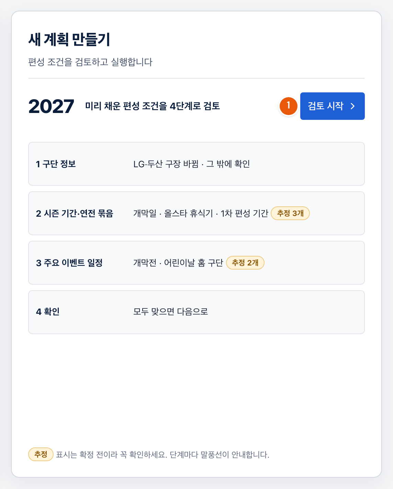
그림 2 「새 계획 만들기」 카드와 「검토 시작」 단추 · 처음 화면
2.2 편성 조건 네 단계 검토하기
네 단계를 차례로 지나며, 미리 채운 값이 맞는지 답합니다. 「추정」 표시가 붙은 값은 KBO 발표 전 예상이라 꼭 확인합니다.
1단계 구단 정보
「그 밖에 바뀐 정보가 있나요?」 줄을 읽습니다.
「이미 고쳐 둔 곳: LG·두산 구장 잠실 → 서울 올림픽 주경기장」이라고 적혀 있습니다. 2027년부터 두 구단이 임시로 쓰는 구장입니다.
그 밖에 바뀐 구단 이름·구장·위치가 없으면 ✓ 없어요 — 그대로를 누릅니다.
바로 2단계로 넘어갑니다. 바뀐 곳이 있으면 있어요 — 고칠게요를 누릅니다(3.1).
2단계 시즌 기간·연전 묶음
「추정 · 확정 아님」 표시가 붙은 줄은 개막일, 올스타 휴식기·후반기 첫 4연전, 1차 편성 종료일 셋입니다. 구역 제목 오른쪽에 「0 / 3 수락」처럼 몇 줄을 수락했는지 보입니다.
개막일 줄의 날짜와 그 밑 근거를 읽습니다.
근거는 「3월 넷째 토요일에 2연전으로 엽니다(2024 · 2025 · 2026 모두 같음).」입니다.
맞으면 ✓ 수락을 누릅니다.
「추정 · 확정 아님」 표시가 「✓ 수락」으로 바뀌고 「1 / 3 수락」이 됩니다.
올스타 휴식기·후반기 첫 4연전 줄과 1차 편성 종료일 줄도 같은 방법으로 읽고 ✓ 수락을 누릅니다.
「3 / 3 수락」이 되고 아래 줄의 다음: 3 주요 이벤트 일정이 눌리게 됩니다. 누릅니다.
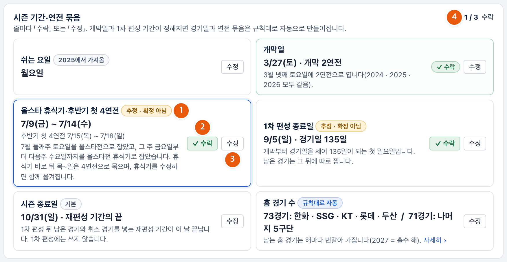
그림 3 「추정 · 확정 아님」 표시가 붙은 줄과 「✓ 수락」·「수정」 단추, 오른쪽 위 「n / 3 수락」 · 2단계 시즌 기간·연전 묶음
값이 KBO 계획과 다르면 수정을 누릅니다. 그 줄 안에 입력칸이 펼쳐지고, 고치면 경기일과 연전 묶음이 바로 다시 계산됩니다.
3단계 주요 이벤트 일정
개막 2연전과 어린이날의 홈 구단은 KBO 공식 발표 전이라, 시범 운영을 위해 예상값으로 설정해 두었습니다.
주요 일정 구역의 개막 2연전 홈 줄을 봅니다. 홈 구단 다섯 개가 칩으로 놓이고, 칩마다 「vs 상대」가 보입니다.
아직 검토하지 않은 단계가 있으면 「아직 검토할 편성 조건이 남았습니다」입니다. 그 줄의 고치기로 돌아갑니다.
다음: 운영 방침·실행을 누릅니다.
단계 띠의 첫 칸에 「완료」가 붙고, 둘째 칸 운영 방침·실행이 켜집니다.
2.3 첫 실행: 기본 방침으로
운영 방침도 실행 시간도 기본값 그대로 두고 실행합니다.
우선순위에서 이동 격차 줄이기 우선 (기본) 카드에 「선택」 표시가 있는지 봅니다.
이 카드는 「이동 횟수·거리 격차를 좁힘」을 지키고, 「주말·공휴일 홈 격차가 벌어질 수 있음」을 내줍니다.
목표마다 허용 수준의 세 줄이 기본값인지 봅니다. 이동 횟수 4회, 이동 거리 600km, 주말·공휴일 3점입니다.
맨 아래 줄의 실행 시간이 「최대 2 분」인지 보고, 이 방침으로 실행을 누릅니다.
화면이 「찾는 중…」으로 바뀌고, 「지금까지 가장 좋은 결과」가 올라올 때마다 아래 숫자가 바뀝니다.
끝날 때까지 기다립니다. 1분 35초 안팎입니다.
「실행이 끝났습니다(…). 「#0001_이동격차_4회_600km_3점」(으)로 저장했습니다.」라는 알림이 뜨고, 현재 결과 분석 화면으로 넘어갑니다. 번호는 실행할 때마다 하나씩 늘어납니다.
2.4 결과 읽기
「요구 사항 점검」을 먼저 봅니다. 반드시 지킬 규칙이 지켜졌는지가 먼저이고, 그다음이 목표별 격차입니다.
셋째 줄의 요구 사항 점검 요약을 읽습니다.
「요구 사항 n개 모두 지킴」이면 됩니다. 「어김」이 있으면 점검표 보기 ›로 어느 항목인지 확인합니다.
맨 위 방침과 견주기 줄을 읽습니다.
1순위부터 차례로 「✓ 허용 안」인지 「넘음」인지 봅니다. 「넘음」 옆에는 얼마나 넘었는지가 적혀 있습니다.
왼쪽 목표별 격차에서 칸을 하나씩 눌러 봅니다.
누른 목표의 구단별 막대가 아래에 보입니다. 초록 띠가 「가장 적은 구단 + 허용 수준」이라, 띠를 벗어난 막대가 허용을 넘긴 구단입니다.
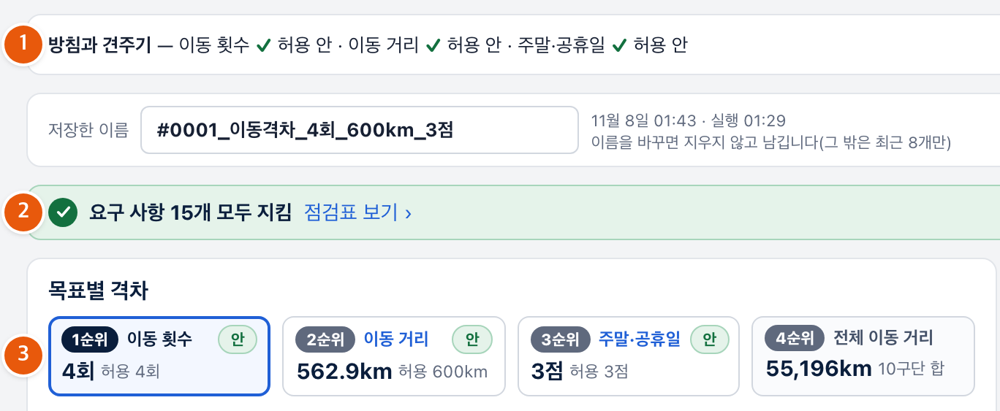
그림 4 「방침과 견주기」 줄, 요구 사항 점검 요약, 「목표별 격차」 네 칸 · 현재 결과 분석
기억해 둘 것은 두 가지입니다. 세 목표가 각각 「안」인지 「넘음」인지, 그리고 주말·공휴일 홈 격차가 몇 점인지입니다. 다음 실행과 견줄 기준입니다.
2.5 방침을 바꿔 다시 실행하기
이번에는 주말·공휴일 홈 격차를 먼저 줄이는 방침으로, 허용 수준도 한 칸 좁혀 실행합니다. 방침에 따라 결과가 어떻게 달라지는지 보려는 것입니다.
화면 맨 아래 줄의 운영 방침 바꿔 다시 실행을 누릅니다.
운영 방침·실행 화면으로 돌아갑니다.
우선순위에서 주말·공휴일 격차 줄이기 우선 카드를 누릅니다.
카드에 「선택」이 붙고, 지금 순위의 1순위가 주말·공휴일 홈 격차 줄이기로 바뀝니다. 머리글의 띠에서 파란 점이 오른쪽으로 옮겨 갑니다.
이 카드는 「주말·공휴일 홈 격차를 좁힘」을 지키고, 「이동 횟수·거리 격차가 벌어질 수 있음」을 내줍니다.
목표마다 허용 수준의 주말·공휴일 홈 격차 줄이기 줄에서 −를 눌러 지금보다 좁힙니다.
첫 실행에서 본 주말·공휴일 격차보다 작은 값이어야 자동 편성이 그 격차를 더 줄이려 합니다. 0까지 내리면 「이 목표를 될 수 있는 한 맞추고 다른 목표를 내줍니다(0은 될 수 없어 1점까지)」라고 안내합니다.
실행 시간이 「최대 2 분」인지 보고, 이 방침으로 실행을 누릅니다.
아래 줄에 「지금 방침: 주말·공휴일 격차 줄이기 우선 · …」이 보입니다.
끝날 때까지 기다립니다. 1분 35초 안팎입니다.
「#0002_주말공휴일_…」(으)로 저장했다는 알림이 뜨고, 현재 결과 분석으로 넘어갑니다.
2.4와 같은 순서로 읽되, 첫 결과와 달라진 곳을 봅니다.
주말·공휴일 홈 격차가 첫 결과보다 줄었는지, 대신 이동 횟수·거리 격차나 전체 이동 거리가 늘었는지 봅니다. 한쪽을 줄이면 다른 쪽을 내준다는 것이 여기서 보입니다.
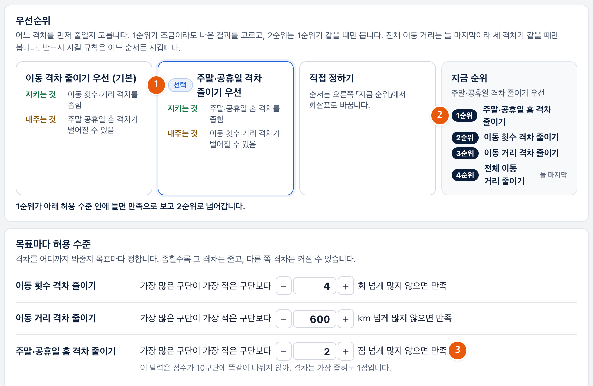
그림 5 「주말·공휴일 격차 줄이기 우선」 카드에 「선택」 표시, 그 아래 허용 수준의 주말·공휴일 줄 · 운영 방침·실행
2.6 두 결과 비교하기
실행 결과 비교에서 두 결과를 나란히 놓고, 「여기서 갈림」이 어느 줄에 붙는지 읽습니다. 그 줄이 「왜 이쪽이 위인가」의 답입니다.
화면 맨 아래 줄의 실행 결과 비교를 누릅니다.
위에 저장한 버전 표, 아래에 고른 두 버전 비교가 보입니다.
저장한 버전 표를 봅니다.
지금까지 실행한 결과와 함께 「기본 제공」 표시가 붙은 버전 두 개가 늘 같이 줄 섭니다. 방금 실행한 결과에는 「새로」가 붙습니다.
줄은 표 제목 옆 운영 방침 칸에 고른 방침의 순위대로 세워집니다. 처음에는 지금 방침, 곧 두 번째 실행의 방침입니다. 다른 방침으로 만든 버전에는 「다른 방침으로 만듦」 표시가 붙지만, 줄 세우기는 같은 방침으로 합니다.
표 왼쪽의 비교 칸에서 첫 실행 결과(#0001)와 두 번째 실행 결과(#0002)에 표시가 있는지 봅니다.
처음에는 방금 실행한 결과와, 순위가 가장 높은 다른 버전 하나가 미리 골라져 있습니다. #0001이 아닌 버전이 골라져 있으면 그 칸을 눌러 빼고 #0001 칸을 누릅니다. 비교는 두 개까지이고, 새로 고른 것이 파랑, 다른 하나가 회색입니다.
아래 고른 두 버전 표를 위에서 아래로 읽습니다.
첫 줄 「요구 사항」은 서버가 다시 센 판정입니다. 둘 다 「n/n 지킴」인지 봅니다.
그 밑에 평가 기준이 1순위부터 줄로 놓입니다. 둘 다 허용 안인 줄에는 「같다고 봄」이 붙고, 처음으로 승부가 갈린 줄에 「여기서 갈림 · 차이」가 붙습니다. 그 아래 줄은 보지 않습니다.
「여기서 갈림」이 붙은 줄을 읽고, 어느 쪽이 그 목표에서 얼마나 앞서는지 봅니다.
두 번째 실행의 방침으로 줄 세웠으니, 1순위 주말·공휴일에서 두 번째 결과가 앞서면 거기서 갈립니다.
운영 방침 칸을 눌러 첫 실행의 방침(「1 이동 횟수 → 2 이동 거리 → 3 주말·공휴일 → 4 전체 이동 거리 · …」)으로 바꿔 봅니다.
같은 두 결과인데 순위가 바뀌거나, 「여기서 갈림」이 다른 줄로 옮겨 갑니다. 어느 결과가 위인지는 결과 자체가 아니라 어느 방침으로 보느냐에 달려 있습니다.
오른쪽 탭 구단별 이동 횟수 · 구단별 이동 거리 · 구단별 주말·공휴일을 하나씩 눌러 두 결과의 구단별 막대를 견줍니다.
파랑과 회색 막대가 구단마다 나란히 놓이고, 숫자는 「파랑 / 회색」입니다.
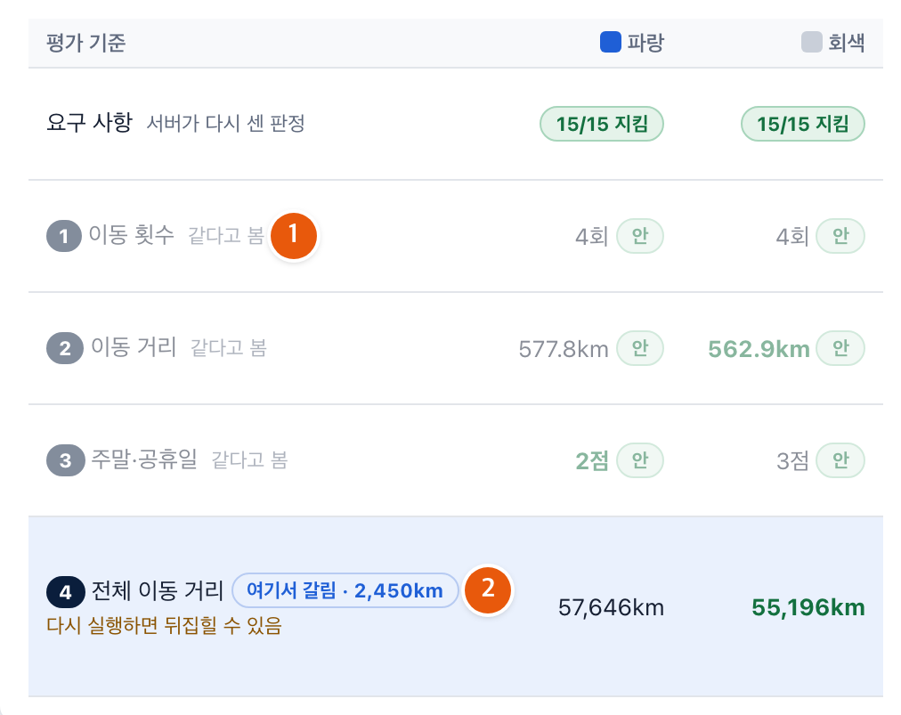
그림 6 비교 기준 방침을 첫 실행 방침으로 바꾼 뒤의 「고른 두 버전」 표 — 「같다고 봄」과 「여기서 갈림 · 차이」가 붙은 줄 · 실행 결과 비교
허용 수준은 「여기까지면 같다고 본다」는 선입니다. 어느 줄에서 갈리는지는 방침의 순서와 허용 수준에 따라 달라지고, 그래서 방침을 정하는 일이 곧 결과를 고르는 기준을 정하는 일입니다. 전체 이동 거리에서 갈리고 차이가 작으면 「여기서 갈림」 옆에 「다시 실행하면 뒤집힐 수 있음」이 함께 붙습니다. 이때는 그 차이로 고르지 말고, 앞 순위의 격차나 구단별 막대로 고릅니다.
2.7 하나를 확정하기
두 결과 가운데 하나를 골라 확정합니다. 확정은 해마다 하나이고, 되돌릴 수 있습니다.
고르기 전에 한 줄로 말해 봅니다. 「n순위까지는 둘 다 허용 안이라 같다고 보았고, ○○에서 이쪽이 앞서 이 버전을 골랐다.」 이 한 줄이 안 나오면 2.6으로 돌아가 「여기서 갈림」을 다시 읽습니다.
저장한 버전 표에서 고른 버전의 줄 오른쪽 확정을 누릅니다.
1위 줄의 확정은 파란 단추로 늘 보이고, 다른 줄의 확정은 마우스를 그 줄에 올리면 보입니다. 「「…」을(를) 2027 일정으로 확정할까요? 처음 화면의 결과 확인에 나옵니다.」라고 묻습니다.
확인을 누릅니다.
「「…」을(를) 확정했습니다.」 알림이 뜨고, 그 줄에 「확정」 표시가 붙습니다. 같은 자리의 단추는 확정 취소로 바뀝니다. 처음 화면의 결과 확인 카드에 2027 줄이 생기고, 보기를 누르면 확정 일정을 봅니다.
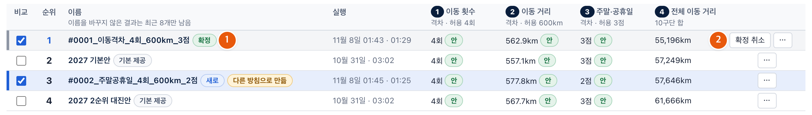
그림 7 「확정」 표시가 붙은 줄과 「확정 취소」 단추 · 실행 결과 비교
되돌리려면 확정 취소를 누릅니다. 「「…」 확정을 취소할까요? 결과 확인에서 빠집니다. 버전은 그대로 남습니다.」라고 묻고, 확인하면 확정만 풀리고 결과는 남습니다.
2.8 한 바퀴를 돌고 나서
운영 방침을 바꾸면 목표별 격차가 다른 결과가 나옵니다. 그 가운데 어느 것을 시즌 일정으로 쓸지는 자동 편성이 정하지 못하므로, 운영자가 고릅니다. 평소 일에서도 이 장과 같이 실행하고, 방침을 여러 가지로 바꿔 보며 결과를 쌓습니다. 자세한 것은 3장부터 6장에 있습니다.
3. 편성 조건
이 장에서 할 수 있는 일편성 조건의 설정마다 무엇을 정하고 언제 바꾸는지 알고, 2·3단계 수정의 요령과 홈 구장 지정을 익힙니다.
편성 조건은 미리 채워져 있고, 운영자는 맞는지 답합니다. 네 단계는 구단 정보 → 시즌 기간·연전 묶음 → 주요 이벤트 일정 → 확인입니다. 앞 단계를 마쳐야 다음으로 갈 수 있고, 네 단계를 모두 마쳐야 실행할 수 있습니다. 한 바퀴 지나는 절차는 2.2에 있습니다.
2·3단계의 줄마다 ✓ 수락 또는 수정이 있습니다. 수정은 그 줄 안에 입력칸을 펼치거나(2단계), 달력에서 고치는 화면으로 갑니다(3단계). 고친 것은 바로 저장되고 Ctrl+Z로 실행 취소합니다. 처음 값과 달라진 줄에는 「직접 고침」이 붙습니다.
나중에 고치려면 단계 띠의 편성 조건 입력·검증을 누르고, 4단계 확인 화면의 각 줄 고치기로 그 단계에 갑니다. 고친 뒤에는 다시 실행해야 결과에 반영됩니다.
3.1 설정 한눈에
거의 바꾸지 않는 설정이 많습니다. 「추정」 표시가 붙은 셋(개막일 · 올스타 휴식기 · 1차 편성 종료일)과 발표 전 예상값 둘(개막 2연전 홈 · 어린이날 홈)만 해마다 꼭 확인합니다.
1단계 구단 정보
설정
무엇을 정하나
기본값
언제 바꾸나
구단·구장·위치
10구단의 이름, 홈 구장, 구장 위치
2025 구단 정보에 LG·두산 구장만 고친 것(서울 올림픽 주경기장)
구장이 바뀌거나 새로 생긴 해
구장 간 거리
구장 사이 거리(km). 이동 거리를 세는 바탕
구장 위치로 추정한 값과 길찾기로 받은 도로거리
거리가 실제와 다르다고 알게 됐을 때
고치려면 있어요 — 고칠게요를 누르고 구단·구장 표에서 그 구단의 줄을 누른 뒤, 구장 칸에 구장 이름을 적고 Enter를 누릅니다. 위치를 찾아 채우고 거리를 다시 셉니다.
2단계 시즌 기간·연전 묶음
설정
무엇을 정하나
기본값
언제 바꾸나
쉬는 요일
경기를 하지 않는 요일
월요일
거의 바꾸지 않음
개막일 「추정」
시즌 첫 경기일. 개막은 토·일 2연전
3월 넷째 토요일
KBO가 개막일을 발표했을 때
올스타 휴식기·후반기 첫 4연전 「추정」
경기 없는 기간의 시작 날짜와 길이. 바로 뒤 목~일은 4연전
7월 둘째 금요일부터 6일
올스타전 날짜가 발표됐을 때
1차 편성 종료일 「추정」
1차 편성으로 짜는 마지막 날
자동 — 필요한 경기일이 되는 첫 일요일
거의 바꾸지 않음
시즌 종료일
재편성 기간의 끝. 1차 편성 결과에는 영향 없음
10월 31일
시즌 마감일이 정해졌을 때
홈 경기 수
홈 73경기를 하는 다섯 구단과 71경기를 하는 다섯 구단
2027은 홀수 해 묶음. 해마다 번갈아 가짐
KBO 방식이 달라졌을 때만
연전 묶음
2·3·4연전이 달력 어디에 놓이는지
규칙대로 자동
특정 기간만 다르게 묶고 싶을 때
수정의 요령입니다. 개막일은 토요일 목록에서 고르거나 다른 날…로 날짜를 적고, 올스타 휴식기는 시작(금)과 길이(일)를 적습니다. 날짜를 고치면 1차 편성 종료일과 연전 묶음이 규칙대로 다시 채워지고, 아래 반영 결과의 경기일 수와 묶음 수가 바로 다시 계산됩니다. 연전 묶음을 직접 고치려면 반영 결과 달력 위의 달력 고치기를 누르고, 날짜를 끌어 묶음을 만들거나 묶음을 눌러 연전 수를 바꿉니다.
3단계 주요 이벤트 일정
설정
무엇을 정하나
기본값
언제 바꾸나
개막 2연전 홈
개막 2연전의 홈 구단 다섯과 각 상대
홈 = 전년도 상위 5구단(잠실을 같이 쓰는 두 구단은 하나만). 상대 = 공식 발표 전이라 시범 운영을 위한 예상값
KBO 발표에서 상대가 다를 때
어린이날 홈
5월 5일 홈 경기를 하는 다섯 구단
홀수 해 묶음. 두산·LG 가운데 하나만. 공식 발표 전이라 시범 운영을 위한 예상값
KBO 발표가 다를 때
공휴일·가중치
공휴일 날짜와 그 날 홈 경기의 가치(점). 주말 하루는 1점으로 고정
정부 공휴일 달력. 공휴일 2점, 어린이날 3점
임시 공휴일이 생겼을 때, 특정 공휴일을 더 무겁게 보려 할 때
홈 구장 지정
특정 날 홈 경기를 할 구단(5곳까지). 대진까지 정할 수도 있음
개막전·어린이날만
그날 꼭 그 구단이 홈이어야 할 때
수정의 요령입니다. 3단계의 수정은 달력에서 고치는 화면으로 갑니다. 개막 2연전은 홈 구단을 바꾸지 않고 대진(원정 @ 홈)에서 상대만 고르며, 다섯 상대를 모두 골라야 다음: 4 확인이 눌립니다. 어린이날은 고른 날 · 5/5(수) 칸에서 다섯 곳을 모두 고릅니다. 공휴일은 1 공휴일과 가중치 표에서 가중치(0~10)를 고치고, 임시 공휴일은 줄 추가로 더합니다. 고친 뒤 검토로 돌아가기를 누릅니다.
4단계 확인
설정
무엇을 정하나
기본값
언제 바꾸나
시리즈 규칙
맞대결 경기 수, 그중 1차 편성, 1차 편성 홈(많은 쪽), 연전 최소 길이, 후반기 첫 4연전 홈
16 · 15 · 9 · 3 · 개막전 홈 구단 그대로
리그 경기 수 방식이 달라진 해
시리즈(규칙대로 자동) 줄의 고치기를 누르면 입력칸이 펼쳐집니다.
3.2 홈 구장 지정: 그날 꼭 그 구단이 홈이어야 할 때
개막전·어린이날 말고도, 특정 날에 특정 구단이 홈이어야 하면 3단계 달력에서 그 날에 홈 구장을 지정합니다. 지정은 반드시 지킬 규칙이 되어 어느 방침으로 실행해도 지킵니다.
3단계 아래 시즌 달력에서 그 날을 누릅니다.
달력에서 고치는 화면이 열리고, 오른쪽 고른 날 · (날짜) 칸에 홈 구장 지정 스위치가 나옵니다.
홈 구장 지정을 켜고, 그 날 홈이어야 하는 구단을 누릅니다. 하루 5곳까지입니다.
칸 위에 「n / 5곳」이 보입니다. 고른 구단만 홈으로 지키므로 꼭 홈이어야 하는 구단만 골라도 됩니다. 같은 구장을 쓰는 두 구단은 하나만 고릅니다.
방식을 고릅니다. 처음에는 홈 구장만 지정입니다.
홈 구장만 지정: 「이 날 홈 경기를 해야 하는 구단을 고릅니다(5곳까지). 상대는 자동 편성이 정합니다.」
대진까지 고정: 「이 날 홈 구단 5곳과 상대까지 정합니다. 자동 편성은 그 시리즈를 고정합니다.」 아래 대진(원정 @ 홈)에서 홈 구단마다 상대를 고릅니다.
왼쪽 2 홈 구장 지정 목록에 그 날이 「n곳」 또는 「n곳 · 대진」으로 보이는지 확인하고, 검토로 돌아가기를 누릅니다.
지정을 지우려면 그 날을 다시 누르고 홈 구장 지정을 끕니다.
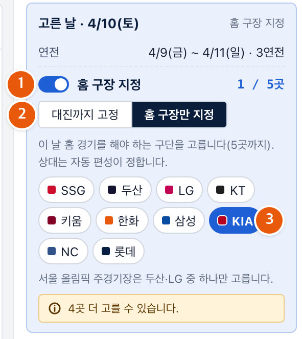
그림 8 달력에서 날을 고른 상태 — 오른쪽 「고른 날」 칸의 「홈 구장 지정」 스위치, 「대진까지 고정」/「홈 구장만 지정」과 구단 단추 · 달력에서 수정
4. 운영 방침
이 장에서 할 수 있는 일우선순위와 허용 수준을 정해 실행하고, 실행 중 화면과 끝 알림을 읽습니다.
운영 방침은 둘로 이루어집니다. 어느 격차를 먼저 줄일지(우선순위)와 목표마다 어디까지 봐줄지(허용 수준)입니다. 운영 방침·실행 화면(단계 띠 둘째 칸)은 위부터 운영 방침 정하기 머리글, 우선순위(카드 둘과 직접 정하기, 오른쪽에 지금 순위), 목표마다 허용 수준 세 줄, 맨 아래 줄의 「지금 방침: …」·실행 시간·이 방침으로 실행입니다. 머리글 오른쪽 운영 방침 설명하기를 누르면 자세한 설명이 열립니다.
4.1 우선순위
어느 격차를 먼저 줄일지 고릅니다. 1순위가 허용 안에 들어오면 그때부터 2순위를 봅니다. 순서는 「무엇을 먼저」이지 「무엇만」이 아니고, 반드시 지킬 규칙은 어느 순서든 지킵니다.
카드
지키는 것
내주는 것
순위
이동 격차 줄이기 우선 (기본)
이동 횟수·거리 격차를 좁힘
주말·공휴일 홈 격차가 벌어질 수 있음
이동 횟수 → 이동 거리 → 주말·공휴일 → 전체 이동 거리
주말·공휴일 격차 줄이기 우선
주말·공휴일 홈 격차를 좁힘
이동 횟수·거리 격차가 벌어질 수 있음
주말·공휴일 → 이동 횟수 → 이동 거리 → 전체 이동 거리
다른 순서를 원하면 직접 정하기를 누릅니다. 지금 순위에 ▲▼가 붙어 1~3순위를 바꿀 수 있고, 4순위 전체 이동 거리 줄이기는 「늘 마지막」입니다. 비교 화면의 순위도 이 순서로 매깁니다.
4.2 허용 수준
목표마다 「이만큼 격차는 괜찮다」는 선입니다. 격차가 허용 수준 이하이면 「안」, 크면 「넘음」입니다. 줄마다 「가장 많은 구단이 가장 적은 구단보다 [−] n [+] 회 넘게 많지 않으면 만족」이라고 적혀 있고, −·+로 이동 횟수 1회, 이동 거리 50km, 주말·공휴일 1점씩 움직입니다. 기본값은 4회 · 600km · 3점입니다.
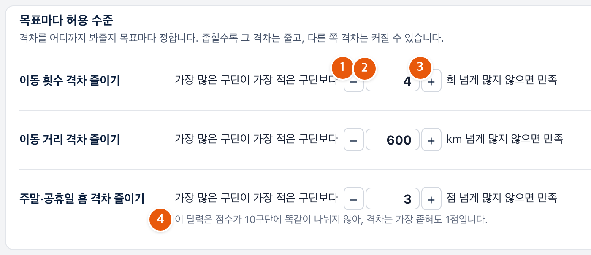
그림 9 「목표마다 허용 수준」 세 줄 — −·+ 단추와 숫자, 주말·공휴일 줄 밑 안내 · 운영 방침·실행
이렇게 두면
그 격차는
다른 쪽은
좁히면
줄이느라 힘을 씁니다. 너무 좁으면 끝까지 못 들어와 「넘음」으로 끝날 수 있습니다
다음 순위 격차를 내줍니다
넓히면
쉽게 만족되어, 허용 수준 근처까지 벌어질 수 있습니다
다음 순위에 힘을 씁니다
0
「이 목표를 반드시 맞추려 하고 다른 목표를 내줍니다」
크게 내줍니다
기본값의 세 배 이상
「이 목표는 사실상 보지 않습니다」
—
처음에는 기본값으로 실행합니다. 1순위가 「넘음」이면 허용을 조금 넓히거나 지정을 줄이고, 2·3순위가 「넘음」이면 받아들일지 순서를 바꿀지 정합니다. 한 번에 하나씩 바꾸고 다시 실행합니다.
4.3 실행 시간과 실행
실행 시간은 최대 1~5분, 기본 2분입니다. 더 나아지지 않으면 그 전에 먼저 끝나므로, 길게 둔다고 늘 그만큼 걸리지는 않습니다. 보통은 기본값 그대로 두고, 아래 줄의 「최대 [−] n [+] 분」에서 바꿉니다.
아래 줄의 「지금 방침: … · 이동 횟수 n회 · 이동 거리 n km · 주말·공휴일 n점」을 읽습니다.
편성 조건을 고친 뒤면 「· 지금 결과에서 이어서」, 홈 지정을 바꾼 뒤면 「· 홈 지정이 바뀌어 처음부터 다시」가 붙습니다. 방침만 바꿨으면 표시 없이 처음부터 짭니다.
이 방침으로 실행을 누릅니다.
눌리지 않으면 허용 수준 구역 아래에 「사전 점검에 진행 불가 n건이 있어 실행할 수 없습니다 — (항목 이름). 편성 조건 입력·검증으로 돌아가 고치세요.」가 적혀 있습니다(7.2).
4.4 실행 중 화면과 끝 알림
머리글에 「찾는 중…」이 보이고, 더 나은 결과가 나올 때마다 아래 숫자가 바뀝니다. 자동 편성은 먼저 반드시 지킬 규칙을 맞추고, 다음에 1·2·3순위를 허용 안으로 넣고, 모두 들어오면 4순위 전체 이동 거리를 줄입니다. 목표별 격차의 4순위 칸에 「줄이는 중 · −n km」가 보이면 앞 순위가 모두 들어온 것입니다.
다른 화면에 가도 실행은 계속됩니다. 도중에 끝내려면 머리글 오른쪽 멈추고 이 결과 쓰기를 누릅니다. 끝나면 알림이 뜨고 현재 결과 분석으로 넘어가며, 결과는 「#번호_방침_허용 수준」 이름으로 저절로 저장됩니다.
알림
뜻
「실행이 끝났습니다(정한 만큼 찾아봄). 「…」(으)로 저장했습니다.」
정해 둔 만큼 찾아보고 끝남. 보통 1분 35초 안팎
「실행이 끝났습니다(고른 최대 시간까지 실행). …」 · 「…(더 나아지지 않아 먼저 끝남). …」 · 「…(직접 멈춤). …」
최대 시간까지 찾았음 · 나아지지 않아 먼저 끝남 · 멈추고 이 결과 쓰기를 누름
「같은 조건으로 전에 실행한 결과를 바로 가져왔습니다. …」
편성 조건·방침·실행 시간이 전과 같아 새로 짜지 않음
「실행이 끝났지만 반드시 지킬 규칙을 지키지 못해 저장하지 않았습니다.」
결과는 보이지만 저장되지 않음. 편성 조건을 확인(7.2)
5. 결과 읽기와 고치기
이 장에서 할 수 있는 일결과를 정해진 순서로 읽고, 「이 결과를 왜 골랐는지」를 한 줄로 말할 수 있게 됩니다. 몇 연전만 손보고 싶을 때 결과를 고치는 법도 익힙니다.
읽는 순서는 넷입니다. ① 요구 사항 점검 → ② 방침과 견주기 → ③ 구단별 보기 → ④ 일정 자세히 보기. 반드시 지킬 규칙이 지켜졌는지가 먼저이고, 목표별 격차가 그다음, 한 구단에 몰린 부담이 그다음, 달력은 마지막입니다.
실행이 끝나면 저절로 현재 결과 분석 화면이 열립니다. 맨 위에 방침과 견주기 줄, 둘째 줄에 저장한 이름과 단추 요구 사항 점검 · 일정 자세히 보기 · 구단별 보기, 셋째 줄에 요구 사항 점검 요약, 왼쪽에 목표별 격차, 오른쪽에 구단별 한눈에가 있습니다.
5.1 요구 사항 점검: 규칙을 다 지켰나
셋째 줄의 요약을 먼저 읽습니다. 「요구 사항 n개 모두 지킴」이면 다음으로 넘어가고, 「요구 사항 n개 어김 — (어긴 항목 이름)」이면 여기서 멈춥니다. 이 판정은 서버가 완성된 일정을 날짜별 경기로 풀어 요구 사항마다 다시 센 것이라, 근거를 펼쳐 직접 세어 볼 수 있습니다.
더 보려면 점검표 보기 › 또는 둘째 줄의 요구 사항 점검을 누릅니다. 맨 위에 지금 일정 다시 점검 · 엑셀로 받기, 그 밑에 시즌 합계와 연전 기간 따라 점검 표가 있습니다. 어긴 기간만에 표시하면 어긴 줄만 남고, 줄을 누르면 그 기간의 날짜별 경기와 근거가 펼쳐집니다.
반드시 지킬 규칙을 어긴 결과는 저장되지 않습니다. 「어김」이 보이면 저장 이름 자리에 「규칙을 어겨 저장하지 않음」이 적혀 있습니다. 편성 조건(특히 지정한 것)을 확인하고 다시 실행합니다.
5.2 방침과 견주기: 목표마다 「안」·「넘음」
맨 위 줄에서 목표마다 허용 수준 안인지 봅니다. 1순위부터 차례로 읽습니다.
방침과 견주기 줄을 읽습니다.
목표마다 「이동 횟수 ✓ 허용 안」처럼 「허용 안」 또는 「n회 넘음」이 적혀 있습니다. 허용 수준을 다시 정하려면 줄 오른쪽 끝 수준 다시 정하기를 누릅니다.
왼쪽 목표별 격차에서 목표 칸을 누릅니다.
칸마다 순위, 격차, 「허용 n」, 「안」·「넘음」이 있습니다. 4순위 전체 이동 거리는 허용 수준이 없어 10구단 합만 보입니다. 누른 목표의 구단별 막대가 아래에 펼쳐지고, 초록 띠(「가장 적은 구단 + 허용 수준」)를 벗어난 막대가 허용을 넘긴 구단입니다.
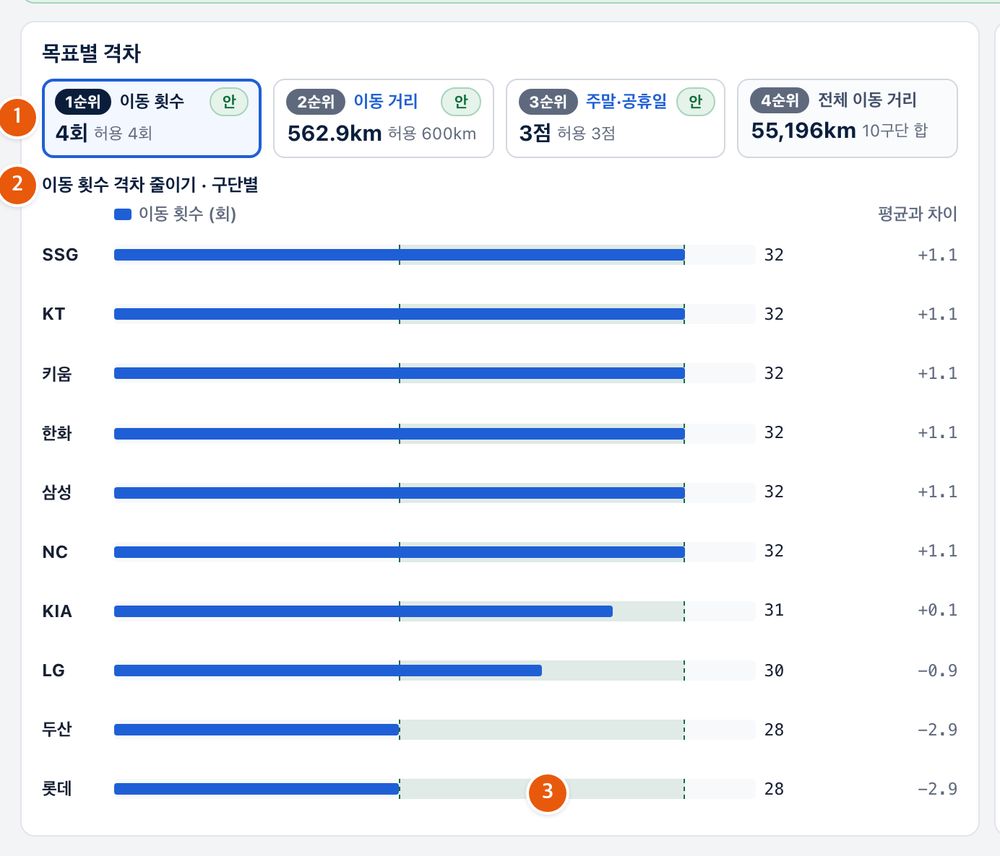
그림 10 「목표별 격차」 네 칸과 누른 목표의 구단별 막대, 초록 띠 · 현재 결과 분석
보이는 것
뜻
다음에 할 일
세 목표 모두 「안」
방침이 요구한 수준을 다 맞춤
4순위 전체 이동 거리와 구단별 보기를 봄
1순위만 「넘음」
허용 수준이 좁거나 지정이 많음
허용을 조금 넓히거나 지정을 줄여 다시 실행
2·3순위 「넘음」
1순위를 지키느라 내줌
받아들일 정도면 그대로, 아니면 순서를 바꿔 다시 실행
5.3 구단별 보기: 한 구단에 몰린 부담
격차가 「안」이어도 특정 구단에 부담이 몰릴 수 있습니다. 오른쪽 구단별 한눈에 표의 열 제목을 눌러 그 기준으로 줄을 세웁니다. 열은 방침 순위대로 이동 횟수 · 이동 거리 · 주말·공휴일 홈(점) 셋이고, 열마다 가장 많은 구단과 가장 적은 구단이 색으로 표시되며, 맨 위 「격차」 줄이 그 둘의 차이입니다. 여러 열에서 같은 구단이 가장 많은 쪽에 있으면 둘째 줄의 구단별 보기를 누르고 왼쪽 목록에서 그 구단을 고릅니다. 구단별 일정표(인쇄로 구단에 나눠 줄 수 있음)와 구단 카드(총 이동거리 · 최장 연속 · 7~8월 원정 등)가 나오고, 다른 구단과 비교로 두 구단을 나란히 놓을 수 있습니다.
구단별 보기의 숫자는 그 구단 하나의 값이고, 방침의 허용 수준은 양 끝 두 구단의 차이입니다. 한 구단의 값이 커 보여도 격차가 허용 안이면 방침은 지켜진 것입니다. 그래도 한 구단에만 몰렸다고 보이면 5.5의 홈 지정이나 연전 고정으로 그 구단의 연전을 잡아 두고 다시 짭니다.
5.4 일정 자세히 보기: 달력과 연전
달력에서 실제 대진을 확인합니다. 둘째 줄의 일정 자세히 보기를 누르면 맨 위에 연전 기간 고정 띠(5.5), 그 밑에 탭 셋이 있습니다.
달력 — 연전 기간마다 대진이 칩으로 놓여 있습니다. 대진까지 정한 경기(개막 2연전)에는 핀 표시가, 고정한 연전 기간에는 「고정」이, 손으로 놓은 경기에는 「손」이 붙습니다.
홈/원정 흐름 — 구단마다 한 줄 띠로 홈·원정 연전의 순서와 옮긴 거리를 보여 줍니다. 오른쪽 끝에 「최장 연속」이 있습니다.
상대별 경기 수 — 맨 위 한 줄이 판정입니다. 「모든 맞대결이 15경기(홈 9 · 원정 6)로 고릅니다」이면 됩니다.
확인할 것은 셋입니다. 개막 2연전과 어린이날의 홈 구단이 편성 조건에서 정한 대로인가, 홈 구장을 지정한 날에 그 구단이 홈인가, 올스타 휴식기 뒤 첫 4연전이 들어 있는가.
5.5 결과 고치기: 몇 연전만 바꾸고 싶을 때
결과 대부분은 좋은데 몇 연전만 바꾸고 싶으면, 그 연전을 고정하거나 홈 구단을 지정한 뒤 나머지를 자동 편성에 맡깁니다. 잡아 둔 것은 두고 나머지만 새로 짭니다.
일정 자세히 보기 맨 위의 연전 기간 고정 띠가 이 일을 맡습니다. 띠에는 연전 기간이 칸으로, 위에 달 이름이 있습니다. 오른쪽 위 「누르면」 뒤의 고정 / 홈 지정 가운데 켜진 쪽에 따라 칸을 눌렀을 때 하는 일이 달라집니다. 그 옆에 모두 풀기, 띠 아래에 검사하고 저장과 나머지 자동 편성이 있습니다.
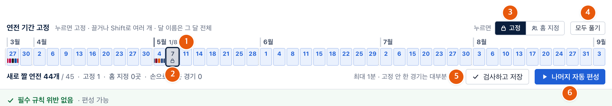
그림 11 「연전 기간 고정」 띠 — 달 이름, 고정한 칸, 「고정」/「홈 지정」 전환, 「모두 풀기」, 띠 아래의 「검사하고 저장」·「나머지 자동 편성」 · 일정 자세히 보기
하는 일
어떻게
화면 반응
연전 고정
고정이 켜진 상태에서 띠의 칸을 누릅니다. 끌거나 Shift로 여러 개, 달 이름은 그 달 전체
그 기간의 모든 대진이 고정되고 칸에 자물쇠 표시가 붙습니다. 다시 누르면 풀립니다
홈 지정
홈 지정으로 바꾸고 3연전 칸을 누른 뒤, 창에서 홈 경기를 할 구단을 누릅니다. 한 연전에 5구단까지
「고른 구단은 이 연전에 반드시 홈 경기를 합니다 · 두산·LG는 한 구단만」. 지금 일정에서 원정인 구단을 고르면 위반으로 보이고 나머지 자동 편성이 반영합니다
경기 손으로 놓기
아래 달력에서 경기 칩을 누르고 옮기기… → 놓을 연전 기간의 여기로를 누릅니다. 그 기간의 다른 경기를 누르면 둘을 맞바꿉니다
놓은 경기에 「손」 표시가 붙고 그 자리에 고정됩니다. 생긴 위반은 띠 아래에 「n건 필수 규칙 위반」으로 보입니다
고친 뒤에는 두 길 가운데 하나로 마칩니다.
나머지 자동 편성 — 고정한 연전·손으로 놓은 경기·홈 지정은 두고 나머지 연전을 자동 편성이 새로 짭니다(최대 1분).
「연전 n개를 새로 짭니다(최대 1분). 고정하지 않은 경기는 대부분 바뀝니다.」라고 알려 줍니다. 끝나면 띠 아래 새로 짠 결과 · 전 → 후 칸에서 목표 넷의 전후를 보고, 결과는 이름 끝에 「_고정후새로짜기」가 붙어 실행 결과 비교에 쌓입니다.
검사하고 저장 — 손으로 놓은 것만으로 일정이 완성됐을 때. 자동 편성 없이 반드시 지킬 규칙을 모두 검사하고, 지켰으면 이름 끝에 「_직접고침」이 붙어 저장됩니다.
위반이 있으면 「필수 규칙 위반 n건이 있어 저장하지 않았습니다.」로 막히고 위반 목록이 열립니다. 그 자리로 ›로 가서 고치거나 나머지 자동 편성으로 고칩니다.
읽기가 끝나면 아래 줄에서 운영 방침 바꿔 다시 실행(4장) 또는 실행 결과 비교(6장)로 갑니다.
6. 비교와 확정
이 장에서 할 수 있는 일쌓인 결과를 순위대로 놓고, 둘을 골라 어디서 갈리는지 읽고, 하나를 시즌 일정으로 확정합니다. 결과를 남기고 밖으로 내보내는 법도 익힙니다.
실행 결과 비교는 「왜 이쪽이 위인가」를 한 줄로 답하는 화면입니다. 위의 저장한 버전 표가 순위를, 아래의 고른 두 버전 표가 그 이유(「여기서 갈림」)를 보여 줍니다. 단계 띠의 넷째 칸 실행 결과 비교를 누르거나, 현재 결과 분석 아래 줄의 실행 결과 비교를 누릅니다.
6.1 저장한 버전: 순위표
모든 버전을 고른 운영 방침의 순위대로 줄 세웁니다. 앞 순위가 허용 수준 안이면 같다고 보고 다음 순위로 넘어갑니다. 표에는 실행할 때마다 저절로 저장된 결과와 「기본 제공」 표시가 붙은 버전 두 개가 늘 함께 있고, 반드시 지킬 규칙을 어긴 결과는 저장되지 않으므로 없습니다. 이름 옆 표시는 「확정」·「새로」·「남김」·「기본 제공」·「다른 방침으로 만듦」·「시험용 자동 편성」이고, 맨 오른쪽에 확정 / 확정 취소와 ⋯ 메뉴가 있습니다.
표 제목 옆 운영 방침 칸을 봅니다.
「1 이동 횟수 → 2 이동 거리 → 3 주말·공휴일 → 4 전체 이동 거리 · 허용 4회 · 600km · 3점」처럼 순서와 허용 수준이 적혀 있습니다. 처음에는 「(지금 방침)」이 붙은 지금 방침이고, 저장한 버전에 쓰인 다른 방침도 고를 수 있습니다. 바꿔 가며 순위가 어떻게 움직이는지 봅니다.
1위와 2위의 차이를 봅니다.
전체 이동 거리에서 갈리고 차이가 작으면 표 아래에 「차이 작음」 표시와 「1위와 2위는 전체 이동 거리 n km 차이입니다. 같은 조건으로 다시 실행해도 이만큼은 달라질 수 있습니다.」가 보입니다. 그 차이로 고르지 않습니다.
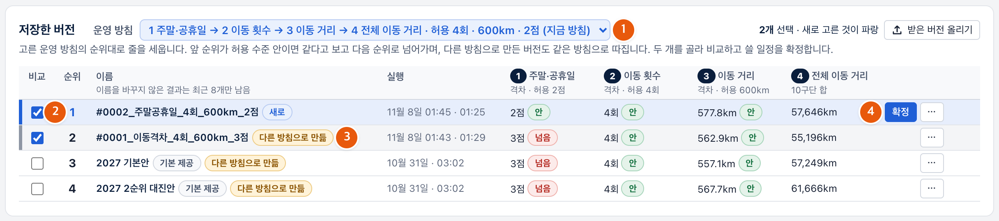
그림 12 「저장한 버전」 표 — 「운영 방침」 칸, 순위, 표시들, 「확정」 단추 · 실행 결과 비교
6.2 고른 두 버전: 여기서 갈림
두 버전을 평가 기준마다 나란히 놓고, 처음으로 승부가 난 줄을 봅니다. 그 줄이 「왜 이쪽이 위인가」의 답입니다.
저장한 버전 표의 비교 칸에서 두 버전에 표시하면(새로 고른 것이 파랑, 다른 하나가 회색), 아래 표에 평가 기준이 1순위부터 줄로 놓입니다. 첫 줄 요구 사항은 「서버가 다시 센 판정」이라 둘 다 「n/n 지킴」이어야 합니다. 둘 다 허용 안인 줄에는 「같다고 봄」이 붙고, 처음으로 갈린 줄에 「여기서 갈림 · 차이」가 붙으며 값이 작은 쪽이 위입니다. 그 아래 줄은 순위에 영향을 주지 않습니다. 오른쪽 탭으로 두 버전의 구단별 막대를 견줍니다. 절차는 2.6에 있습니다.
읽고 나면 이렇게 한 줄로 말할 수 있어야 합니다.
「n순위까지는 둘 다 허용 안이라 같다고 보았고, ○○에서 이쪽이 △만큼 앞서 이 버전을 골랐다.」
6.3 확정하기
고른 버전의 줄에서 「확정」을 누릅니다. 확정은 해마다 하나이고, 확정한 버전이 처음 화면의 결과 확인에 나옵니다.
저장한 버전 표에서 고른 버전의 줄 오른쪽 확정을 누르고 확인하면(절차는 2.7), 그 줄에 「확정」 표시가 붙고 같은 자리의 단추가 확정 취소로 바뀝니다. 처음 화면의 결과 확인 카드에서 보기를 누르면 확정 일정 화면이 열립니다.
되돌리려면 확정 취소를 누릅니다. 「「…」 확정을 취소할까요? 결과 확인에서 빠집니다. 버전은 그대로 남습니다.」라고 묻고, 확인하면 확정만 풀립니다. 「시험용 자동 편성」 표시가 붙은 버전은 편성 서버에 연결되지 않은 채 낸 결과라 확정 단추가 없습니다.
6.4 버전 다루기: ⋯ 메뉴
줄 오른쪽 끝의 ⋯ 메뉴에서 버전 하나를 다룹니다.
메뉴
하는 일
불러오기
그 버전의 일정을 지금 일정으로 가져옵니다. 현재 결과 분석이 그 버전으로 바뀌고, 편성 조건도 그 버전을 만들 때로 돌아갑니다
내려받기
그 버전을 파일 하나로 받습니다. 다른 사람이 표 제목 오른쪽 받은 버전 올리기로 올릴 수 있습니다
이름 바꾸기
「새 이름」을 적습니다. 이름을 바꾼 버전에는 「남김」이 붙고 지우지 않습니다. 이름을 바꾸지 않은 결과는 최근 8개만 남습니다
지우기
「「…」을(를) 지울까요? 되돌릴 수 없습니다.」라고 묻고 지웁니다. 확정한 버전에는 없습니다
남길 버전은 이름 바꾸기로 뜻이 보이는 이름을 붙입니다. 현재 결과 분석 둘째 줄의 「저장한 이름」 칸에서 바로 고쳐도 됩니다.
6.5 밖으로 내보내기
확정한 일정을 다른 사람에게 넘길 때는 엑셀로 받습니다. 내보낼 버전을 불러오기로 지금 일정으로 만든 뒤, 현재 결과 분석 → 요구 사항 점검을 누르고 맨 위 줄의 엑셀로 받기를 누릅니다. 첫 시트가 연전 기간별(기간마다 구장별 대진), 다음이 날짜별 출전표(날마다 구단별 상대와 홈·원정), 그다음이 요구 사항 항목마다 근거 표입니다. 화면의 달력과 같은 일정이며, 셈이 맞는지 직접 세어 볼 수 있습니다. 버전 자체를 넘기려면 ⋯ 메뉴의 내려받기로 받습니다.
6.6 확정 전 확인 목록
확정을 누르기 전에 다섯 가지를 확인합니다.
확인할 것
어디서
1
요구 사항 점검에서 어긴 항목이 0개인가
현재 결과 분석 셋째 줄 · 고른 두 버전의 「요구 사항」 줄
2
1순위 목표가 「안」인가. 「넘음」이 있다면 받아들일 수 있는 정도인가
방침과 견주기 · 목표별 격차
3
구단별 보기에서 한 구단에 몰린 부담이 없는가
구단별 한눈에 · 구단별 보기
4
지정한 것(개막 2연전, 어린이날 홈, 홈 지정, 고정한 연전)이 그대로 들어갔는가
일정 자세히 보기의 달력
5
비교한 버전과의 「여기서 갈림」을 보고 이 버전을 고른 이유를 한 줄로 말할 수 있는가
고른 두 버전
다섯 가지가 모두 되면 확정을 누릅니다. 하나라도 안 되면 그 화면으로 돌아가 확인하고, 필요하면 방침을 바꿔 다시 실행합니다.
7. 이럴 때는 · 막히면
이 장에서 할 수 있는 일업무 상황마다 어느 설정을 어디서 바꾸는지 찾고, 화면의 알림·표시에서 무엇을 하면 되는지 압니다.
상황으로 찾으면 7.1, 화면에 보이는 글로 찾으면 7.2입니다. 절차는 해당 절에 있습니다. 여기 없는 증상은 8장의 문의처로 알려 주세요.
7.1 이럴 때는: 상황 → 설정
상황
설정
어디서
절
그날 꼭 그 구단이 홈이어야 할 때
홈 구장만 지정
3단계 주요 이벤트 일정 → 시즌 달력에서 그 날 → 고른 날
3.2
그날 꼭 그 대진이어야 할 때
대진까지 고정
같은 곳. 홈 구단과 상대를 함께 고름
3.2
이동 부담보다 주말 흥행의 공평이 중요할 때
주말·공휴일 격차 줄이기 우선
운영 방침·실행 → 우선순위
4.1
이동 거리를 횟수보다 먼저 보고 싶을 때
직접 정하기로 이동 거리를 1순위에
운영 방침·실행 → 지금 순위 ▲▼
4.1
한 목표의 격차를 더 줄이고 싶을 때
그 목표의 허용 수준을 좁힘
운영 방침·실행 → 목표마다 허용 수준
4.2
결과 대부분은 좋은데 몇 연전만 바꾸고 싶을 때
연전 고정 또는 홈 지정 → 나머지 자동 편성
일정 자세히 보기 → 연전 기간 고정 띠
5.5
한 경기만 다른 날로 옮기고 싶을 때
옮기기… → 여기로 → 검사하고 저장 또는 나머지 자동 편성
일정 자세히 보기 → 달력
5.5
KBO가 개막일·올스타전 날짜를 발표했을 때
그 줄 수정
2단계 시즌 기간·연전 묶음
3.1
KBO가 발표한 개막 대진의 상대가 다를 때
개막 2연전 홈 줄 수정 → 상대 고르기
3단계 주요 이벤트 일정
3.1
임시 공휴일이 생겼을 때
공휴일·가중치 줄 수정 → 줄 추가
3단계 → 달력에서 수정 → 1 공휴일과 가중치
3.1
어느 결과를 확정할지 모르겠을 때
둘을 골라 고른 두 버전의 「여기서 갈림」을 읽음
실행 결과 비교
6.2
결과를 다른 사람에게 넘길 때
요구 사항 점검 → 엑셀로 받기, 또는 ⋯ → 내려받기
현재 결과 분석 · 실행 결과 비교
6.5
특정 날 구장을 쓸 수 없을 때(대관 등)와 시즌 중 취소 경기를 다시 넣을 때는 지원 예정입니다. 지금은 그 설정이 없습니다. 어떤 상황에서 필요한지 8장의 문의처로 보내 주시면 설계에 씁니다.
7.2 막히면: 증상 → 대처
화면에 적힌 글을 그대로 찾으세요.
증상
원인
대처
이 방침으로 실행이 눌리지 않는다
사전 점검에 진행 불가 항목이 있습니다. 허용 수준 구역 아래에 「사전 점검에 진행 불가 n건이 있어 실행할 수 없습니다 — (항목 이름). …」이 보입니다
단계 띠의 편성 조건 입력·검증으로 돌아가 항목 이름의 곳을 고칩니다. 「구장 간 거리」는 1단계 거리표, 「특별 경기 충돌」은 3단계 홈 구장 지정, 「n연전 자리」·「같이 쓰는 구장 자리」는 2단계 연전 묶음
다음 단추가 눌리지 않는다
이 단계에 ✓ 수락하지 않은 줄이 있습니다. 3단계는 개막전 홈 구단이 전년도 순위와 달라도 막힙니다
남은 줄을 ✓ 수락합니다. 개막전은 전년도 순위대로 되돌리기 ›를 누릅니다
「시험용 자동 편성 — 결과가 좋지 않습니다」 표시가 보인다
편성 서버에 연결되지 않아 브라우저 안의 시험용 자동 편성을 씁니다. 결과가 나쁘고, 요구 사항 점검이 없고, 확정할 수 없습니다
편성 서버 주소로 다시 엽니다. 연결이 되지 않으면 8장의 문의처로 알립니다
실행이 끝났는데 목표가 「넘음」이다
허용 수준이 너무 좁거나, 지정·고정이 많아 찾을 여지가 적습니다. 2·3순위의 「넘음」은 1순위를 지키느라 내준 것일 수 있습니다
1순위면 수준 다시 정하기로 허용을 조금 넓히거나 지정·고정을 줄입니다. 2·3순위면 받아들일지, 순서를 바꿀지 정합니다
「실행이 끝났지만 반드시 지킬 규칙을 지키지 못해 저장하지 않았습니다.」
지정이 서로 부딪히거나 연전 묶음이 규칙과 다릅니다. 저장 이름 자리에 「규칙을 어겨 저장하지 않음」이 보입니다
요구 사항 점검에서 어긴 항목을 보고, 3단계 지정과 2단계 묶음을 확인한 뒤 다시 실행합니다
「같은 조건으로 전에 실행한 결과를 바로 가져왔습니다.」
편성 조건·운영 방침·실행 시간이 전과 모두 같아 새로 짜지 않았습니다. 고장이 아닙니다
다른 결과를 원하면 허용 수준이나 실행 시간을 조금이라도 바꿉니다
「처음부터 다시 짤 수 없어 지금 일정에서 이어서 고칩니다.」 · 「고정한 연전이 많아 새로 짤 수 없습니다 · 고정을 줄여 보세요」
고정한 연전이 많습니다. 앞은 이어서 풀어 결과가 나온 것이고, 뒤는 그것도 안 된 것입니다
결과가 괜찮으면 그대로 씁니다. 더 바꾸려면 시즌 띠에서 고정을 풀고 다시 나머지 자동 편성을 누릅니다
「고정한 것끼리 위반이 있어 실행하지 않았습니다.」 · 「필수 규칙 위반 n건이 있어 저장하지 않았습니다.」
고정한 연전·손으로 놓은 경기·홈 지정끼리 반드시 지킬 규칙이 어긋납니다
열린 위반 목록의 그 자리로 ›로 가서 고정을 풀거나 경기를 다시 놓습니다
확정 단추가 없는 줄이 있다
「시험용 자동 편성」 표시가 붙은 버전입니다
편성 서버에 연결해 같은 방침으로 다시 실행합니다
「자동 편성 오류: …」 · 「편성 실패 — …」
편성 서버가 실행을 끝내지 못했습니다. 뒤에 붙은 글이 이유입니다
한 번 더 실행합니다. 되풀이되면 뒤에 붙은 글과 함께 8장의 문의처로 알립니다
8. 용어 · 문의
이 장에서 할 수 있는 일화면과 이 매뉴얼에 나오는 말의 뜻을 찾고, 막혔을 때 어디에 물을지 압니다.
8.1 용어
가나다순입니다. 더 많은 말은 전체판 12장에 있습니다.
말
뜻
격차
한 목표에서 가장 많은 구단의 값 − 가장 적은 구단의 값
고정
결과 고치기에서 연전 기간의 대진을 그대로 두는 것. 그 뒤의 실행에서 바뀌지 않음
안 · 넘음
격차가 허용 수준 이하이면 「안」, 크면 「넘음」
여기서 갈림
「고른 두 버전」에서 처음으로 승부가 난 줄에 붙는 표시. 그 줄이 두 버전의 순위를 가름
연전
같은 두 구단이 이어서 하는 경기 묶음(2·3·4연전). 자동 편성은 연전 단위로 짬
요구 사항 점검
서버가 완성된 일정을 날짜별 경기로 풀어 반드시 지킬 규칙을 항목마다 다시 센 판정
우선순위
어느 격차를 먼저 줄일지의 순서. 1순위가 허용 안에 들면 2순위를 봄. 전체 이동 거리는 늘 마지막
운영 방침
우선순위와 허용 수준을 합쳐 부르는 말
1차 편성
시즌 시작부터 1차 편성 종료일까지 연전 단위로 짜는 일정. 남은 경기는 재편성(지원 예정)에서
자동 편성
매치봇 스튜디오가 편성 조건과 운영 방침에 따라 일정을 만드는 일
지정
꼭 이렇게 되어야 한다고 정해 두는 것. 개막 2연전 대진, 어린이날 홈, 홈 구장 지정, 결과에서의 연전 고정·홈 지정. 반드시 지킬 규칙이 됨
추정
KBO 발표 전이라 예상으로 넣은 값. 「추정 · 확정 아님」 표시가 붙고, 운영자가 수락하거나 수정함
허용 수준
목표마다 「이만큼 격차는 괜찮다」고 정하는 값. 「여기까지만 맞추고 다음 목표로 넘어가라」는 선
홈 지정
편성 조건에서는 특정 날 홈 경기를 할 구단을 정하는 홈 구장 지정(홈 구장만 / 대진까지), 결과 고치기에서는 3연전의 홈 구단을 정하는 것
확정
한 버전을 그 해의 시즌 일정으로 정하는 것. 해마다 하나. 「확정 취소」로 되돌림
8.2 문의
문의와 의견은 시프트랩으로 보냅니다. 이메일 admin@everyshift.co.kr.
물어보기 전에 화면의 글을 그대로 7.2에서, 상황은 7.1에서 찾아봅니다. 문의할 때는 어느 화면에서, 무엇을 눌렀는지, 화면에 보인 글 그대로, 그때의 결과 이름을 적습니다. 결과를 함께 보내려면 실행 결과 비교 → ⋯ → 내려받기로 받은 파일을 붙입니다. 지원 예정 기능은 어떤 상황에서 필요한지 적어 주시면 설계에 씁니다.
이 핵심판에 없는 것은 전체판 운영 매뉴얼에 있습니다. 모든 설정의 기본값과 범위, 반드시 지키는 규칙의 전체 목록(11장), 시즌 중 다시 짜기(8장), 자주 묻는 질문(13장)입니다. 따로 요약 카드 1~2쪽이 있어, 한 바퀴 순서와 확정 전 확인 목록만 담아 시즌 직전에 복습할 때 씁니다.